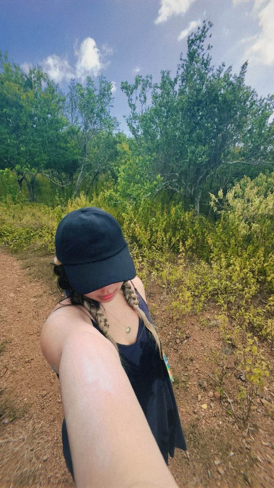
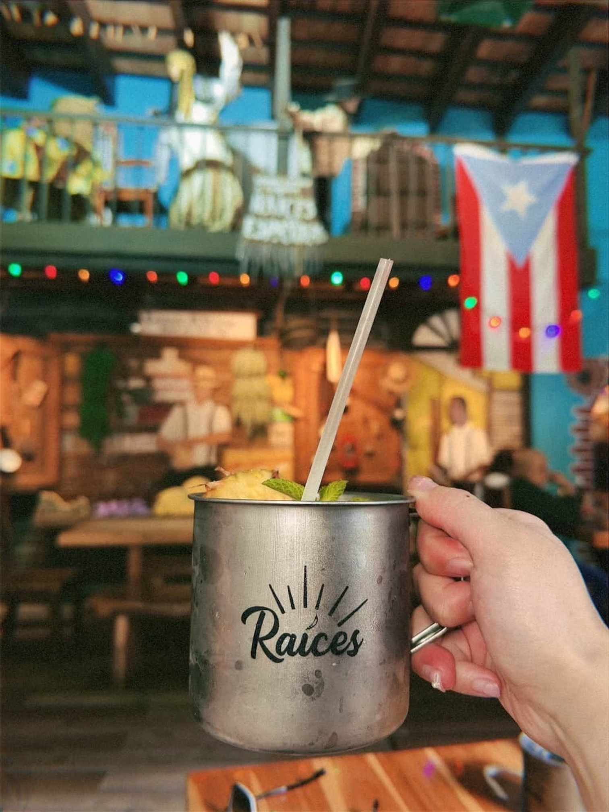

Top Attractions & Popular Locations

El Yunque National Forest
The only tropical rainforest in the U.S. National Forest System, offering stunning waterfalls and hiking trails.
Old San Juan
A beautifully preserved colonial city with colorful streets, historic forts, and lively nightlife.

Restaurante Raices
A famous restaurant known for its authentic Puerto Rican cuisine and legendary piña coladas.

Flamenco Beach, Culebra
One of the world's most stunning beaches, featuring crystal-clear waters and soft white sand.